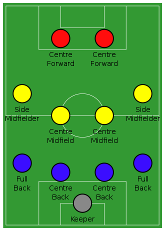

Назва в україні
Згідно зі спогадами Степана Шаха, професор Іван Боберський 1908 року організував серед учнів Академічної Гімназії Львова «Спортовий Кружок гри ніжної пилки», який самі гімназисти називали "футбалевий клюб".До радянської анексії в Західній Україні також використовували назву "ко́паний м'яч", або "ко́панка".
Зміст
- Головні правила
- Історія футболу
- Тактика
- Стандартні положення - вільні удари
- Стандартні положення - вкидання
- Основні змагання
- Рівень національних збірних
- Рівень клубних команд
- Футбол в Україні
Головні правила
Уперше правила введені 7 грудня 1863 року Англійською футбольною асоціацією. Базувались на придуманих у Кембриджському університеті положеннях гри.
- Грають на футбольному полі завдовжки 90—120 метрів і завширшки 45—90 метрів. На двох протилежних кінцях стоять ворота (завширшки 7,32м і заввишки 2,44 м), куди потрібно завести м'яча. М'яч, обвід якого повинен бути 68-71 см, а маса — від 396 до 453 грамів. У момент початку гри тиск усередині кулі має бути від 0,6 до 1,1 атмосфери (600—1100 г/см²).
- Кількість запасних гравців визначається регламентом змагання і знаходиться у межах від 3 до 7.
- Рішення судді є остаточними і під час гри не переглядаються, якщо на матчі не задіяна система відеоасистенту арбітра. В такому випадку після прийняття рішення та в разі порушення правил відеоасистент арбітра може запропонувати головному арбітру змінити своє рішення шляхом усної рекомендації або перегляду відеоповтору моменту безпосередньо головним арбітром.
Для подачі скарг на дії суддів існує регламент змагання і спеціальні комітети, що розглядають дані питання.
- Футбольний матч складається з двох рівних таймів по 45 хвилин із 15-хвилинною перервою між ними. Після перерви команди міняються воротами.
За домовленістю тривалість тайму може бути змінена. Проте домовленостей потрібно досягти до початку матчу, і вони не повинні суперечити правилам змагання. Перерва між таймами не перевищує 15 хвилин й указується у регламенті змагань. Регламент змагань може потребувати додаткового часу для вирішення нічиїх.
- За правилом 9 футбольних правил м'яч вважається таким, що «вийшов з гри», якщо він цілком виходить за межі поля, або гра зупинена суддею.
- Голом називається ситуація, коли м'яч цілком перетнув лінію воріт, розташовану між стійками і під перекладиною, й при цьому команда, що забила гол, не порушила правил.
- Порушення караються штрафним або вільним ударом, попередженням або видаленням гравця.
- Пенальті — вид штрафного удару у футболі, що пробивається з відстані 12 ярдів (приблизно 11 метрів від воріт). Тільки воротар команди, що захищається, може знаходитись між м'ячем і воротами під час пробиття цього удару. Пенальті пробивається під час звичайної гри. Схожі удари також пробиваються під час післяматчевих пенальті для визначення команди, що проходить у наступний раунд змагань у випадку, якщо матч закінчується внічию. Хоча процес пробиття цих ударів схожий з пробиттям пенальті, вони офіційно не вважаються пенальті; процес пробиття цих ударів відбувається згідно з іншими правилами.
- Вкидання м'яча є одним із способів відновлення гри. Гол, забитий безпосередньо після вкидання, не зараховується. Вкидання призначається у випадку, коли м'яч повністю перетне бокову лінію поля, з місця, де м'яч перетнув лінію на користь команди-суперниці гравця, що останнім торкнувся м'яча. При вкиданні м'яча не фіксується положення «поза грою».
- Удар від воріт призначається, коли м'яч, останнього разу торкнувшись гравця нападаючої команди, повністю перетнув лінію воріт, і гол не був забитий. Якщо ж м'яч пішов за лінію воріт від гравця команди, що оборонялася, призначається кутовий.
- Кутовий удар є одним з найнебезпечніших стандартних положень. Команди часто відпрацьовують тактику у захисті й нападі при пробитті кутових ударів. Оскільки всі відстані заздалегідь відомі, то грамотно пробитий кутовий удар стає прекрасним шансом забити гол. Найчастіше м'яч з кутового навішують у штрафний майданчик, де високі футболісти або прагнуть одразу пробити по воротах, або скинути м'яч під удар партнерові. Рідше подають м'яч низом, але через велике скупчення гравців при кутових опанувати м'ячем буде складніше.
IFAB щороку вносить зміни в правила футболу. Зазвичай зміни в правила, прийняті IFAB часто на початку року, вступають в силу з 1 червня поточного року[3].
Історія футбол
Ігри, схожі за основними принципами на сучасний футбол, існували в різних народів з давніх часів. Так, серед претендентів на головний прообраз футболу є стародавні китайці (чжу-чу), давні римляни та греки (гарпастум), середньовічні італійці (кальчо), ацтеки. Проте нинішній футбол є прямим нащадком гри у м'яч в Британії. Перші правила гри, які чітко розрізняли футбол і регбі, були записані 1863 року, хоча перші футбольні клуби з'явилися дещо раніше. Футбол за встановленими правилами здобув популярність наприкінці XIX-го, на початку XX-го століття. Завдяки британським морякам гра потрапила в численні портові міста світу, а звідти поширилася на територію країн Європи, Латинської Америки, Африки, Азії.
Потреба в створенні єдиної організації для управління всім світовим футболом стала очевидною на початку 20 століття зі зростанням популярності та кількості міжнародних матчів. Спочатку Футбольна Асоціація Англії очолювала процес врегулювання різних дискусійних питань зі створення, але ця робота була без прогресу; і тому право створити таку організацію випало на долю семи інших європейських держав. ФІФА було засновано 21 травня 1904 в Парижі, саме цей факт став причиною того, що в загальноприйнятих повній та скороченій формі використовується французька назва. Країнами-засновниками були Бельгія, Данія, Іспанія, Нідерланди, Франція, Швейцарія і Швеція; трохи пізніше цього ж року до ФІФА приєдналася Німеччина, а ще через рік Австрія, Англія та Італія. Першим президентом ФІФА був француз Робер Герен. Перші змагання під егідою ФІФА були проведені в 1906 році, хоча особливих успіхів в організації змагань ФІФА не досягла. Цей факт, в комбінації з низкою економічних чинників привів до відставки Герена з поста президента і його заміни Деніелом Вулфоллом з Англії, яка на той час уже стала членом асоціації. Наступні змагання під егідою ФІФА — футбольний турнір на Олімпійських Іграх 1908 року в Лондоні були набагато успішнішими, хоча і виникли певні проблеми пов'язані з участю професійних футболістів в Олімпійських Іграх.
Членство ФІФА розширилося за межі Європи з прийняттям Південно-Африканського Союзу в 1909, Аргентини і Чилі в 1912 і Сполучених Штатів в 1913.
Під час Першої світової війни ФІФА пережила серйозні випробовування, оскільки багато гравців відправилися на фронт, а можливість міжнародних переїздів для проведення турнірів була сильно обмеженою. Після війни, зі смертю Вулфолла, президентський пост обійняв голландець Карл Хіршманн. ФІФА була врятована від повного розвалу, але ціною цього був вихід з організації усіх чотирьох британських асоціацій, котрі не бажали брати участь у міжнародних змаганнях з їхніми недавніми ворогами.
В сучасну епоху за кількістю гравців на всіх рівнях футбол поступається тільки легкій атлетиці й займає перше місце серед командних видів спорту. Сучасна історія футбольного м'яча розпочалась в середині XIX століття, коли Чарльз Гудієр розробив перший м'яч, виготовлений з вулканізованої гуми. Сім років по тому, в 1862 році інший винахідник Річард Ліндон створив першу надувну гумову камеру для м'яча. Пізніше Ліндон розробив насос для камери, і на виставці в Лондоні його винахід здобув золоту медаль у футболі.
Сім років після того, в 1863 році була заснована Футбольна асоціація Англії, яка виробила перші уніфіковані футбольні правила, однак в них нічого не згадувалось про футбольний м'яч. У 1872 році офіційно був встановлений стандартний розмір та вага м'яча. До цього розмір та вага м'яча визначались перед матчевими домовленостями обох команд.
Тактика
Оскільки футбол гра командна, на перше місце висувається взаєморозуміння гравців, уміння вести грамотні спільні дії. Важливе значення при цьому має тактичну побудову гравців. Тактика ділиться на три основні категорії:
- розстановка гравців;
- дії команди при атаці або при обороні, в відношенні або всієї команди, або її частини;
- стандартні положення.
4-4-2 Для гравців і тренерів важливо визначити роль кожного гравця на полі і способи, якими вони повинні досягати мети гри, — забити гол і не дозволити зробити цього суперникам. Для цього доводиться приділяти увагу всім трьом аспектам тактики, а також стежити за еволюцією гри в цілому. Найпоширенішою тактичною схемою в сучасному футболі є гра з чотирма захисниками, чотирма півзахисниками і двома нападниками — 4-4-2. Існує велика кількість схем, проте саме поняття схеми, як і поняття амплуа гравців досить відносно. У залежності від кваліфікації гравців, їх обов'язки на полі можуть значно виходити за межі амплуа. Так, часто за задумом тренера півзахисники, особливо крайні (а іноді навіть і центральні захисники) виконують роль нападників. У зв'язку з розвитком теорії футболу і універсалізацією гравців стали анахронізмом деякі широко відомі перш схеми (наприклад, бразильська атакуюча схема «дубль-ве» або система оборони з вільним захисником) і багато футбольні терміни («інсайд», «ліберо» і т. п .).
Сильні сторониЦя схема має великий захисний потенціал. При втраті м'яча півзахист відходить назад, і ви отримуєте в результаті 8 чоловік, що стоять в обороні. Жоден з ваших гравців не залишається один на один з противником — у нього завжди є партнер на підстраховці.
Коли м'яч у вашої команди — жоден з ваших гравців не знаходиться в ізольованій позиції. Він завжди може отримати допомогу від партнерів або допомогти партнеру. Розвиток атаки можна здійснювати, використовуючи короткі та середні передачі ближньому гравцю, які завжди простіше виконати, ніж точний пас на 50 метрів. Це допомагає команді підтримувати коефіцієнт володіння м'ячем і розвивати атаку.
Слабкі сторониСлабкість номер один — ізольованість форвардів. Коли команда обороняється, то форварди зазвичай залишаються попереду, і, щойно м'яч відібраний, виникає ситуація, коли потрібно якомога швидше доставити м'яч вперед, щоб по максимуму скористатися тимчасової неготовністю суперника до оборони. Варіант перший — зробити швидкий пас вперед, форвард повинен вміти прийняти м'яч, обіграти захисника і атакувати ворота, або хоча б зберегти м'яч до підходу партнерів. Другий варіант пов'язаний з використанням форварда-диспетчера, який відходить в глибину поля для отримання м'яча і потім доставляє його вперед. Це вимагає від такого гравця видатних здібностей та вміння віддавати точний пас.
І друга проблема, пов'язана з використанням 4-4-2, це навантаження, якій піддаються крайні півзахисники. Звичайно, вона виражена не так явно, як в 3-5-2, але крайній півзахисник повинен контролювати великий простір і брати участь у всіх трьох командних функціях — обороні, творенні і атаці. А це вимагає дуже якісних гравців, які повинні володіти широким технічним арсеналом і бути підготовленими фізично.
І, нарешті, третє, що потрібно мати на увазі, хоча це і не можна назвати слабкою стороною, радше, це просто особливість. Для успішного використання цієї схеми потрібно налагодити чітку взаємодію в парах: у парі форвардів, у парах флангових гравців (захисник-півзахисник).
4-3-3 Ця схема гри веде свій початок від схеми 4-2-4. Успіхи збірної Бразилії на чемпіонатах світу зробили її популярною у всьому світі. Однак, широке використання показало не тільки її сильні сторони, а саме атаку, але і слабкості — в першу чергу оборонні. Тому, було вирішено «пожертвувати» одним форвардом і перевести його в півзахист. Так і з'явилася ця схема.
При розвитку атаки, в атакуючих діях беруть участь 6 осіб, а захисники залишаються на підстрахавці. З урахуванням того, що вся атакуюча група знаходиться в штрафний і біля неї, захист висувається до центральної лінії — щоб не створювати розривів між півзахистом і захистом. Це автоматично спричиняє за собою вибір на користь пресингу на чужій половині поля і ущільнення стратегії командної побудови в зоні м'яча. А значить, від захисни повинні вміти справлятися з контратаками, які починаються довгим пасом на хід нападаючим, а півзахисті — швидко накривати гравця, який володіє м'ячем, щоб звести подібні контратаки до мінімуму.
Сильні сторониСильною стороною цієї схеми є атака. Саме початкове розташування трьох форвардів дає команді більше можливостей для продовження атаки. Команді легко підтримувати як ширину атаки (це роблять крайні форварди), так і її глибину (це завдання центрфорварда). У всіх трьох лініях в кожній із зон (центр і фланги) є свій гравець, що допомагає в розвитку атаки.
Слабкі сторониСлабкістю цієї схеми гри, є оборона. Три форварди, а іноді і захопившись атакою півзахисники часто вимикаються з гри першим же пасом атакуючої команди. В результаті, на захист падає велика відповідальність. Захисники повинні вміти контролювати широкий простір, вони повинні вміти опікати гравців атаки суперника. Вони повинні читати гру, повинні наздоганяти нападників суперника, якщо ті змогли отримати м'яч на хід.
Щоб полегшити життя захисту — півзахист повинна активно пресингувати суперника відразу після втрати м'яча. Це вимагає від захисників вміння грати позиційно, фізичної готовності, витривалості і працездатності.
Для успішного розвитку атаки півзахисники повинні вміти швидко доставляти його в лінію атаки, що вимагає від них відповідних навичок. Тобто, всі три півзахисника в значній мірі повинні бути універсалами, здатними успішно атакувати й оборонятися.
Стандартні положення — кутові
Кутові, або корнери — одне з трьох основних стандартних положень, поряд з вільними ударами і вкидання. Підраховано, що понад 50 відсотків м'ячів забивається саме зі стандартних положень. Кутові діляться на три типи: подача м'яча на ближню штангу, на дальню штангу або короткий розіграш. При подачі на ближню штангу можна і відразу бити по воротах.Стандартні положення — вільні удари
Можливість забити м'яч з вільного удару залежить від відстані до воріт і від того, прямий це удар чи ні.Стандартні положення — вкидання
Вкидання м'яча у штрафний майданчик може бути розіграно двома способами: або гравець скидає м'яч своєму партнеру, або відразу б'є по воротах. «Тоттенхем Хотспур» 1961 року, коли він зробив «золотий дубль», розігрував м'яч таким чином: Дейв Маккей вкидав м'яч на голову Боббі Сміту, який стояв на лінії воротарської, а Сміт скидав його своєму партнеру, який і забивав гол. Якщо захисник встигав до м'яча першим, «Тоттенхем» заробляв принаймні кутовий, але дуже часто цей розіграш закінчувався голом. Одного разу дуже видовищний розіграш вкидання вдався «Арсеналу». Кліфф Голтон вкинув м'яч майже на 11-метрову позначку, і Дуг Лішмен перекинув м'яч через воротаря Боббі Брауна. Це сталося в престижному товариському матчі в 1951 року «Квінз Парк Рейнджерс» зрівняв рахунок у фіналі Кубка Англії 1982 проти «Тоттенхема», коли Боб Гейзелл вкинув м'яч на Террі Фенвіка, який і забив гол. Подібним чином Девід Вебб з «Челсі» забив переможний гол у переграванні фіналу Кубка Англії в 1970 року проти «Лідса». М'яч тоді вкинув Іен Гатчінсон.
Основні змагання
Рівень національних збірних
Найважливішим футбольним змаганням є Чемпіонат світу з футболу, який розігрується під егідою ФІФА кожних чотири роки, і в якому беруть участь національні збірні понад 200-от країн світу. Це змагання складається з кваліфікаційного етапу, на якому відбираються 32 найкращі збірні, й фіналу. Окрім Кубку світу серед чоловіків ФІФА проводить також Кубок світу серед жінок, а також низку молодіжних і юнацьких змагань з віковими обмеженнями для учасників.
ФІФА відповідає також за проведення Олімпійського футбольного турніру — змагання з футболу в рамках Олімпіад.
У проміжку між фіналами Кубку світу, проводяться континентальні чемпіонати, зокрема в Європі, чемпіонат Європи з футболу
Рівень клубних команд
На клубному рівні найважливішими футбольними змаганнями є національні чемпіонати, в Україні — Чемпіонат України з футболу, та національні кубки, в Україні — Кубок України з футболу. Національні футбольні змагання організовані за системою ліг і дивізіонів й охоплюють гравців усіх рівнів — від аматорів до професіоналів.
Окрім національних клубних змагань існують міжнародні клубні турніри. Найпрестижнішими міжнародними турнірами на клубному рівні є європейська Ліга чемпіонів УЄФА та латиноамериканський Кубок Лібертадорес. Іншим міжнародним кубковим змаганням у Європі до 2009 року був Кубок УЄФА, який з сезону 2009/2010 було реорганізовано в Лігу Європи, а також Ліга конференцій УЄФА, перший розіграш якої розпочався в 2021 році.